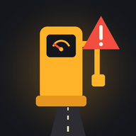

Deficit Hunter
The world has run out of fuel. Queue at stations that open only at certain hours, dodge queue jumpers and roadside resellers, and reach your destination before the deadline.
Support
Found a bug or have an idea? Write to yumakarov@icloud.com. Please mention your device, iOS version and the level (or "Daily Route").
Common questions
- How do I drive?
- Right thumb: push the lever up for gas, pull it down to brake, let go to coast. Left thumb: the ◀ ▶ buttons, or swipe on the road, to change lanes.
- Where is the Daily Route?
- In the main menu, after you complete level 3. A new route appears every day at 00:00 UTC — the same for every player.
- Leaderboards don't open.
- Sign in to Game Center in Settings → Game Center, then reopen the game.
- How do I start over?
- Main menu → "Reset progress" at the bottom.
- How do I change the language?
- Main menu → the language menu under the buttons.
Privacy Policy — the game collects no data.
В мире кончилось топливо. Стойте в очередях на заправках, которые работают по часам, отбивайтесь от наглецов и перекупщиков и успейте доехать до срока.
Поддержка
Нашли ошибку или есть идея? Пишите на yumakarov@icloud.com. Укажите устройство, версию iOS и уровень (или «Маршрут дня»).
Частые вопросы
- Как управлять?
- Правый палец: рычаг вверх — газ, вниз — тормоз, отпустить — накат. Левый: кнопки ◀ ▶ или свайп по дороге — смена полосы.
- Где маршрут дня?
- В главном меню, после прохождения 3-го уровня. Новый маршрут появляется каждый день в 00:00 UTC — один для всех игроков.
- Не открываются таблицы рекордов.
- Войдите в Game Center: Настройки → Game Center, затем перезапустите игру.
- Как начать заново?
- Главное меню → «Сбросить прогресс» внизу.
- Как сменить язык?
- Главное меню → меню языка под кнопками.
Политика конфиденциальности — игра не собирает данные.
El mundo se quedó sin combustible. Haz fila en gasolineras que solo abren a ciertas horas, esquiva a los colados y a los revendedores de carretera, y llega a tu destino antes de la hora límite.
Soporte
¿Encontraste un error o tienes una idea? Escribe a yumakarov@icloud.com. Indica tu dispositivo, la versión de iOS y el nivel (o «Ruta diaria»).
Preguntas frecuentes
- ¿Cómo se conduce?
- Pulgar derecho: sube la palanca para acelerar, bájala para frenar, suéltala para ir en punto muerto. Pulgar izquierdo: los botones ◀ ▶, o desliza sobre la carretera, para cambiar de carril.
- ¿Dónde está la Ruta diaria?
- En el menú principal, después de completar el nivel 3. Cada día a las 00:00 UTC aparece una ruta nueva, la misma para todos los jugadores.
- Las clasificaciones no se abren.
- Inicia sesión en Game Center en Ajustes → Game Center y vuelve a abrir el juego.
- ¿Cómo empiezo de cero?
- Menú principal → «Reiniciar progreso», abajo del todo.
- ¿Cómo cambio el idioma?
- Menú principal → el menú de idioma debajo de los botones.
Política de privacidad: el juego no recopila ningún dato.
Der Welt ist der Sprit ausgegangen. Steh an Tankstellen an, die nur zu bestimmten Zeiten öffnen, setz dich gegen Drängler und Schieber am Straßenrand durch und erreiche dein Ziel vor Ablauf der Frist.
Support
Einen Fehler gefunden oder eine Idee? Schreib an yumakarov@icloud.com. Nenn bitte dein Gerät, deine iOS-Version und das Level (oder „Tagesroute“).
Häufige Fragen
- Wie fahre ich?
- Rechter Daumen: Hebel hoch für Gas, runter zum Bremsen, loslassen zum Rollen. Linker Daumen: die Tasten ◀ ▶ oder Wischen über die Straße, um die Spur zu wechseln.
- Wo finde ich die Tagesroute?
- Im Hauptmenü, sobald du Level 3 geschafft hast. Jeden Tag um 00:00 UTC erscheint eine neue Route – für alle Spieler dieselbe.
- Die Bestenlisten öffnen sich nicht.
- Melde dich unter Einstellungen → Game Center an und öffne das Spiel dann erneut.
- Wie fange ich von vorn an?
- Hauptmenü → ganz unten „Fortschritt zurücksetzen“.
- Wie ändere ich die Sprache?
- Hauptmenü → das Sprachmenü unter den Tasten.
Datenschutzerklärung – das Spiel erfasst keine Daten.
Le monde est à court de carburant. Fais la queue dans des stations qui n’ouvrent qu’à certaines heures, déjoue les resquilleurs et les revendeurs du bord de la route, et arrive à destination avant l’heure limite.
Assistance
Tu as trouvé un bug ou tu as une idée ? Écris à yumakarov@icloud.com. Indique ton appareil, ta version d’iOS et le niveau (ou « Trajet du jour »).
Questions fréquentes
- Comment conduire ?
- Pouce droit : pousse le levier vers le haut pour accélérer, tire-le vers le bas pour freiner, lâche-le pour rouler en roue libre. Pouce gauche : les boutons ◀ ▶, ou glisse sur la route, pour changer de voie.
- Où est le Trajet du jour ?
- Dans le menu principal, une fois le niveau 3 terminé. Un nouveau trajet apparaît chaque jour à 00:00 UTC, le même pour tous les joueurs.
- Les classements ne s’ouvrent pas.
- Connecte-toi à Game Center dans Réglages → Game Center, puis relance le jeu.
- Comment recommencer à zéro ?
- Menu principal → « Réinitialiser » tout en bas.
- Comment changer de langue ?
- Menu principal → le menu des langues sous les boutons.
Politique de confidentialité : le jeu ne collecte aucune donnée.
全世界的燃油都用光了。在只在固定时段营业的加油站排队，躲开插队者和路边黄牛，在截止时间前抵达目的地。
支持
发现了 bug 或有好点子？请发邮件至 yumakarov@icloud.com。请注明你的设备、iOS 版本和关卡（或“每日路线”）。
常见问题
- 怎么开车？
- 右手拇指：拨杆上推是油门，下拉是刹车，松手即滑行。左手拇指：点 ◀ ▶ 按钮或在路面上滑动即可变道。
- 每日路线在哪里？
- 通过第 3 关后，在主菜单中即可找到。每天 00:00 UTC 会出现一条新路线——所有玩家都一样。
- 排行榜打不开。
- 请在“设置 → Game Center”中登录 Game Center，然后重新打开游戏。
- 怎么从头开始？
- 主菜单 → 底部的“重置进度”。
- 怎么切换语言？
- 主菜单 → 按钮下方的语言菜单。
隐私政策——本游戏不收集任何数据。